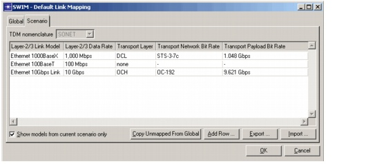

Mapping Layer-2/3 Links to Transport Connections > Setting Link Mapping Defaults
Setting Link Mapping Defaults
Typically, the layer and bit rate of a mapped connection is determined by the link model in SP Guru Network Planner. You can create traffic matrices with the correct layer and bit rate automatically in the SWIM - Map Links Dialog Box.
To configure the default mapping behavior, choose SWIM > Set Link Mapping Defaults. This opens the Default Link Mapping dialog box, which you can use to edit the default mapping options for the current scenario (Scenario tabbed page). You can use the Global tabbed page to edit the default settings for new scenarios in SWIM projects.
Figure 5-2 SWIM - Default Link Mapping Dialog Box

| Home © 1987-2007 OPNET Technologies, Inc. All Rights Reserved. This software may be covered by one or more U.S. Patents. See complete patent notice in the Legal Notices section. OPNET Support Center |